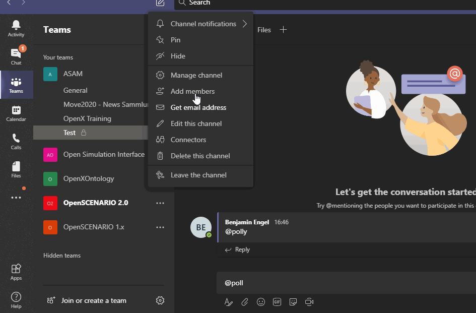

Receiving notifications in microsoft teams
Context
Notifications for new posts to Teams channels are not always on by default. In order to be aware of all updates, the user can turn on the updates.
| This needs to be done for each channel separately! |
How
-
More information by Microsoft
